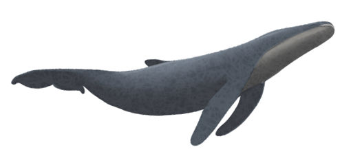

系列报道 | 一个摇滚乐队主唱发起募捐，他随后经历了一些胜利、一些波澜和一些释怀
原文链接 备份链接 这是疫情信息笼罩的第三周。疫区之外，很多人足不出户，长时间坐在电脑前。屏幕里是层出不穷的求助，家破人亡的悲剧，一出又一出的荒诞和不义。线上线下的割裂感让人无法心安理得地享受自己现有的安全。除了让自己沉浸在悲伤、愤怒和强 …


1830年秋天，为了筹备婚礼同时处理伯父的丧事，普希金去了父亲的庄园波尔金诺村。
他原打算在那里待3个星期，没想到赶上当地闹瘟疫，交通封锁。于是，他在村里一住就是3个月，无事可做的他投身创作，完成了27首抒情诗、6部中篇小说、4部诗体小悲剧、3章诗体长篇小说。
这就是文学史上著名的“波尔金诺之秋”。

配图 | 作者供图
前 言
_
_

这是一场战争，在新年的伊始，爆发在每一个普通的、平凡的中国人身边。
这是我们的战争，我们热切地讨论、谨慎地分析，为灾难中陨落的生命而痛惜，为医者大无畏的精神所感动，为我们能为之所做的点滴小事而不懈努力。
人生海海，我们且行且惜。
网易人间「我们的战争」特辑，讲述每一天，我们与疫情赤膊相见。
我们的战争丨连载07
晚上，我脱了衣服正准备睡觉，刘旭发来一条信息：“你和你媳妇都量下体温。”
早上我刚和他说好，明天搭他的顺风车去省会郑州，然后从那里乘坐高铁回北京。要是在平时，他这么说，我可能会骂他一顿，但这次，我麻溜儿披上外套，跑到客厅找温度计。妻子也没有异议，接过温度计时，还建议我把结果拍照发给刘旭。
我们两个人一个36.3℃，一个36.4℃，体温都比平时要低，以至于发照片时，我都有些不好意思，像在撒谎一样。棱形的温度计在手里转了好几次，才显示出水银汞柱来。刘旭看到照片，回了个尴尬的表情：“可能是天气冷，温度低。”
家里人都反对我们这个时候回北京，态度最坚决的是我爸和弟弟。每天的饭桌上，他俩基本上承包了所有关于周边地区疫情的新闻。我爸平时说话脸上就带着情感起伏，认真起来绝对可以到六亲不认的地步。今天吃饭时，他提到隔壁乡一个在武汉读书的大学生确认感染，又说这个大学生回乡时乘坐了大巴。说话的时候，他眉头紧锁，嗓音急迫，像坐在家里的煤气灶上。我把官方公布的死亡人数念给他，他根本不信，“肯定不止这些”。
我三姑家的表弟在武汉卖烟酒，在家族群里说春节不打算回来了。腊月二十九时，大家还在七嘴八舌地问他们：武汉那里怎么样，超市还能买到菜吗？表弟媳妇说，他们的烟酒店关了门，路上没人，但超市开着，不过，排骨涨价到了50块钱一斤，高速也封了，不让出也不让进。

到了正月初一，弟弟发起群视频聊天拜年，发现表弟一家竟然穿越封锁、从武汉偷偷回来了。我爸一听，赶忙给三姑打电话：“明天别让亚川（表弟的名字）他们来走亲戚，你们也别来了，都关上门在家里待着吧！”打完电话，在院子里踱了两圈，他又给大姑打了一个，让她注意点，别让三姑一家上门。
“就咱爸管得宽！”弟妹抱着小侄子，在沙发上说他。我爸梗着脖子不买账，坚持说这是为大家好。
我爸看似防范意识最强，但每天吃完饭，他就背着手去村里遛弯儿。除了各家屋里电视的声音，整个村子空荡荡的，只有几个叔叔伯伯站在平时扎堆的空地上闲聊，相互递烟。聊的无非还是疫情——哪个村又有从武汉回来的，各地疫情有什么新进展，这个病和当年“非典”的区别……有戴了口罩出门的，没等说上两句，嫌说话不方便，很自然地把口罩扒到下巴的位置，伸着头迎接飞溅的唾液。
话题绕了一圈，最让叔伯们关注的，是这几天附近几个村子的婚宴。伴随着在外务工的年轻人的返乡潮，现在春节时各村的婚礼格外多。他们都在感慨：西京哥年三十给儿子办婚礼“太及时”，“圆满了”。因为，“看完春节联欢晚会，气氛整个都不一样了”。
村口的路上在除夕前就挖了个大坑，土堆堵住了整条路，上面扯了红色的条幅：强防护不恐慌，信科学不信谣。如今，村口通往外面的三个路口也都被封掉，去镇上买菜要推自行车才能通过。每天村里的喇叭吆喝着不准串亲戚、不准聚众，这个时候娶亲出嫁，无疑是个挑战。
婚丧嫁娶是农村生活里至关重要的大事。按我们这里的规矩，谁家孩子结婚，婚礼这天，所有的亲戚都要从各地赶过来，吃上一顿“十个碟子八个碗”的“大桌”，看着新人拜了天地，这桩婚事才算真正作数。选结婚的日子，必须慎重，一般是家中的男主人带上两盒好烟和新人的生辰八字，专程向当地的风水先生求问。这个过程叫“查好儿”，一旦“好儿”（良辰吉日）确定下来、通知了各地的亲友，再改动日子就成了大忌，是不吉利的象征。
住在我家后面的长生大爷家，原本计划初六要送孙女小璐出嫁，最近几天都在为这个事情焦心。他眨巴着已经半瞎的一对眼睛说，他过两天就找村西头的小坤开他的挖掘机，把村头的路给填平，让迎娶的车开到村子里来。叔伯们听着他的计划，默默吸着烟，没人接话——我之前听我爸说，他表弟家的儿子结婚，原本也安排在正月初六，现在已经打电话说取消了。“万一弄出来个发热感冒的，搞得客人们都传染了，谁担得起这个责任？”
或许是本地对疫情防控抓得早，亲戚朋友都对“聚会”避之不及。几个高中同学原本想在三十中午聚一下，结果在前一天突然就取消了。从上海回来的一个女同学防范意识很强，说每家都有小孩，一旦生了病很麻烦，“等明年咱们一定聚！”我发了“抱拳”以示赞同，放假前大家满涨的重逢的热情和期待，不知道什么时候，就已经彻底消失不见。
寡淡地过到初一晚，我突然想起，自己甚至忘了在几个重要的微信群里拜年，也没有给几个关系很近的朋友发消息。朋友圈里从头刷到尾，都是新冠肺炎的新闻。读到一个好友除夕晚上的状态：“在这种时刻，面对这种节目，是一种拷问。地球上最后的夜晚。”一想到头天晚上面对着电视屏幕上的小品自己还在哈哈大笑，我突然被一种强烈的负疚感攫住，此后便久久挥之不去。
初三那天，手机上忽然跳出一则新闻：安阳籍一名女子从武汉回到家中，父母和姑姑均被她传染上了肺炎，而她至今还没有出现任何症状。读新闻时，我正在楼上阳台晾晒好几天没有干的衣服，村里的街上静悄悄的，持续数日的阴天，像在营造刑场的氛围。我扒着晾衣架，忍不住想：这名回乡的女子心里会好受吗？
家族群里还在热热闹闹地发送着疫情消息，只有表弟一家从武汉回来后，像从生活中蒸发了一般，再也没有说话。
晚上，我爸再次因为我们要回北京的决定而生气。他不好意思直接责问我妻子，饭后在客厅里，连连质问我“还要不要命”。
弟弟则在一旁病恹恹地坐着，手里托着口杯准备吃药。自从去年做了切除甲状腺瘤的手术，他变得异常敏感多疑，有些风吹草动就喜欢联想，偏偏这几天他又染上了感冒，胸闷干咳。这让他异常憔悴，心情低落，脾气也格外大。吃饭的时候他特意避开我们，匆匆扒完饭，就去厨房里刷自己的碗筷，然后摆到很远的位置。前天下午，我和妻子小声嘀咕，胸口突然有些疼，该不会是肺炎吧？他勃然大怒：“中了，别说了！”说完，转身上了楼。
我望了一眼爸爸，唯唯诺诺地解释道：“在家里什么我活儿也干不了，回去也是不出门，能把手头的翻译任务做一部分出来。”
弟妹笑了，边给小侄子喂饭边问我：“这都什么时候了，还想着工作？”
她在一所私立的建筑公司上班，年前早早放了假，这次疫情让她的工作又无限期后延。待在家里，她和弟弟每天穿着花条纹的棉睡衣，和沙发的花纹相得益彰，十分休闲。
我和妻子平时喜欢看国外电影。这次回家，为了迎合不懂英文的爸妈，同时不委屈自己，我们每天都在绞尽脑汁挑好的国产电影看，弟弟陪我将这几年的“金鸡百花”获奖影片挨个搜罗了一遍。不过，我所憧憬的一家人其乐融融观影的场景并没有出现，电影播出不一会儿，弟妹就抱着小侄子上楼睡觉，妻子对程式化的剧情提不起精神，而弟弟则拨弄起手机刷抖音。我也很难集中注意力，总想站起来，伸个懒腰。
姐姐的工作单位在合肥传染病医院附近，公司发了延期上班的通知。每天没事可做，她便给我们打视频电话，问我们在做什么，嘱咐我爸不要外出。一天四五次视频聊天，把家里人的耐心也聊没了。有时见我们都不说话，姐姐就问握着手机、眼神上抬的妈妈：“你们在看什么电影呢？”妈妈也不说话，把手机反过去，摄像头对着电视屏幕给她直播。
我们单位的群里也有人问是否会推迟上班，但办公室的人没有回应。同研究室的老师前两天发了张截屏图片到群里，说人大附中春节前，高三年级开了个上千人的家长会，有个家长当时已感染病毒，第二天就入院治疗，最后抢救无效死亡。
我心里咯噔一下，一团不安定的因素，像一滴墨汁滴到水里正向四处扩散。最近一段时间，这种感觉时不时袭上心头，就像小时候走夜路去厕所，总觉得那些猩红皮肤的蛇、毛茸茸的老鼠都躲在看不见的地方窥伺着我。我下意识地环顾四周光滑的墙壁，找不到那双眼睛在哪里。
研究室里另外一个老师向来活泼开朗，他在群里发了个“笑哭”的表情：“我们遇上了‘波尔金诺之春’”。
这个冷笑话，或许只有我们这帮研究俄罗斯文学的人才懂：1830年秋天，为了筹备婚礼同时处理伯父的丧事，普希金去了父亲的庄园、位于下诺夫哥罗德的波尔金诺村。他原打算在那里待3个星期，没想到赶上当地闹瘟疫，交通封锁。于是，诗人在波尔金诺村一住就是3个月，无事可做的他投身创作，完成了27首抒情诗、6部中篇小说、4部诗体小悲剧、3章诗体长篇小说。
一场瘟疫促成了文学史上“波尔金诺之秋”的佳话，却没能激起我半点工作的热情。从北京背回来的书还在行李箱里静静地躺着，不知为什么，在河南老家待得再无聊，也不想翻开它们。家里有一台弟弟买的二手跑步机，有两次出于体重焦虑，我站上去跑了几分钟，便气喘吁吁地下来了。网上的段子说，现在微信运动上前三名的朋友可以直接拉黑了，没事瞎出去溜达，早晚传染上。我闲极无聊，点开了“微信运动”，第一名是我大学时的老师，走了4000多步，和平时的动辄2万多步比起来，差远了。
我爸出门转了一圈，回来时说：“不得了了，乡里司道口村同时出现了两名病例，已经被送到人民医院了！”本来就对电影心不在焉的我们立即热烈讨论起肺炎来，屏幕上的剧情变得更加遥远，越发使人无动于衷。
渐渐开始有人在朋友圈抱怨假期太长，想回去上班，“不关几日，就不会明白，小孩有多喜欢上学，大人有多盼望上班”。一个朋友家对面的小区有了确诊病例，搞得他们全家惶惶不安，5天没有出门，连窗户也不敢打开太久，“感觉整个人发霉了”。
我有时又觉得很哑然：在家里待着有吃有喝，不用上班挤地铁，不用熬夜加班，不就是我们天天梦寐以求的生活吗？
初三的傍晚，我和妻子在房间里实在坐够了，每人戴了3副口罩，走出了家门。小侄子看我俩出去，立刻跟了上来。妻子拉起侄子的手问我：“去哪儿？”我指了指村西头——那里有大片的麦田，还有一座土地庙。
刚走了几步，背后突然传来一声：“回来！不要命了？！”
我回过头，弟弟穿着厚厚的棉睡衣站在门口，右手托着个保温杯，像庙里的托塔李天王，一脸不容侵犯的威严。

抢到回北京的票以后，我打电话告诉了岳母。她话音里带着哀怨：“那还用抢？现在不知道有多少退票的呢！”
春节回家时，我和妻子计划得很完美：年前在我家，年后去她家。大年初一那天，我们告诉岳母，疫情严重，我们退掉了去南阳的车票。她虽然有些失落，但还没有完全失去希望。现在听说我俩要直接回北京，她彻底伤心了——辛辛苦苦炸的丸子、卤的牛肉、包的包子，瞬间没有了意义，全成了她的负担。
论对家庭的关怀，女人确实心更细一些。姐姐每天给家里打电话监督我爸，妻子也会时不时挂念南阳那边的父母。这次疫情，南阳和信阳因为靠近湖北，一直是河南的重灾区，官方数据栏里河南省首例死亡病例，也发生在南阳。
妻子给娘家打完电话，又打电话给姨妈。姨妈家有个读小学的表弟，生性好动，每天吃完饭在外面疯跑。电话里，姨妈郑重其事地向我们承诺，一定做好防护措施，尽量不外出。妻子在这边强调：“不是尽量，是一定不能外出！”姨妈刚说了声“好”，就听小表弟在那边告状：“谁说的，你昨天没有和别人打麻将吗？”
姨妈似乎有些尴尬，告诉我们，儿子是在“报复”她。我和妻子哭笑不得，问：“表弟又去广场上和其他小孩玩了吗？”姨妈斩钉截铁地说：“没有！”为了不让儿子出门，她费尽了力气，最后不得已使出了绝招：把他的衣服全都藏了起来，锁在了柜子里。
把这些热爱群居生活的人突然分开关在家里，真是非常困难的一件事，何况是在春节这样以“团聚”为主题的时间里。我想起初二晚上，我从妻子分享的视频里，第一次听到了“聚堆儿”这个词。视频里，我们省一个村的支书通过大喇叭在喊话，由于村里人不听劝告在外面聚众“喷空儿（闲聊）”，他语气暴躁，喊话里带着浓烈的训斥意味和莫名的亲切感：
“再三强调，叫你在家待着，你就待不住！在你家待着能把你憋死？刀都架到脖子上了，还不知道厉害……如果明天我再看见你在街上聚堆儿，我可对你不客气……”
这段“硬核”训话被改编成了说唱歌曲，在微博上火了。我和妻子坐在被窝里，接连听了好几遍，笑得喘不过气来。河南省的疫情防控这次似乎是走在了全国的前列，几个外地朋友此大加赞扬，说我们有一个想让人“偷走”的好省长，没人再提以前那些“偷井盖”的段子了。一时间，我突然觉得有些扬眉吐气，但又说不上来具体的光荣在什么地方。
为了避开返程人流，我买的是正月初五的车票。回北京的头天晚上，我们开始收拾行李。来的时候给家人买了些东西，如今箱子里腾出来的空间又被妈妈拎来的大包小包填满。
听网上说有的地方大白菜价格涨到了96元钱一颗，我妈把土豆、胡萝卜、西葫芦都打包塞进了箱子里，晚上弟妹又打着手电筒，去叔叔家门口拔了些菠菜和小青菜。
我还是第一次从家里带这些新鲜蔬菜走，装箱时怕压坏了菜叶，格外小心。妻子叠放着外套，自言自语地说：“不知道xx有没有营业。”想来送快递的小哥恐怕也有不少都被“锁”在了全国各地的村子里，应该也穿着睡衣在家里窝着吧？
东西装到一半，我爸又从老房子里又提了一桶香油过来。他现在是我们家唯一一个还上蹿下跳的“外交家”，天天出门，还几乎从不戴口罩，任我们劝了多少次都不见效果。回来时，就把道听途说的新闻都给我们讲一遍，仿佛是一个舍身忘我的传道人。
他提到小璐的婚礼，说大概是要推迟了，风声这么紧，谁还有胆子出来吃喝。他又说，张堂村今天上午有一家儿子结婚，没有人去“吃大桌”，120桌好酒好菜都晾在自家院子里，白白糟蹋了。
一提到宴会，我又想到，普希金190年前在波尔金诺村滞留时，曾根据英国诗人威尔逊的悲剧《瘟疫城》创作了一部小悲剧，《瘟疫流行时的宴会》。在这部作品里，他描写了鼠疫肆虐时，人们对生命的几种态度：年轻人在酒席上纵情享受，以狂欢驱散对死亡的恐惧；神父号召会众追随上帝以获得慰藉；而宴会主席则抱着视死如归的态度，悲壮愤慨……
这些铺天盖地的疫情新闻，同普希金笔下觥筹交错、生死交欢的氛围似乎并没有多少差别。生活在各种舆论中间，我们每天的感受都是复杂多元的：同情、无奈、愤慨、失望、恐惧、焦虑，还掺杂着看热闹时的兴奋、喜悦、侥幸，就像那些在视频上“云监督”火神山医院建院直播的5000多万名网友。
我们似乎直面着生与死，又似乎在虚实难辨地狂欢，等紧张和兴奋过了阈值，又会变成冗长的倦怠、漠然。
收拾完行李，我选了一部天津方言的喜剧电影。客厅里只有我、妻子、妈妈和表弟。表弟算是半个观众，隔一分钟就低头玩手机游戏，妻子在取暖器上反复烤她的袜子，而我妈还没看到一半就开始犯困，像不倒翁一样打盹。
“睡觉！”我突然说。其他人立刻清醒过来，如同得到了赦免令一般，很快地起身，走向了各自的卧室。

初五上午11点，刘旭给我打了个电话，说车子到了村口。在这之前，我们已经坐立不安地等了1个多小时，我爸两次催我给刘旭打电话，我也隐隐有些担心，这家伙是不是在家里犹豫要不要来接我们，毕竟这是在特殊时期，他的妻子也不认识我们。
我们上车之后，刘旭又折回县城家中，去接他已经怀孕的妻子。路上他看我和妻子都戴着厚厚的口罩，补充了一句：“我的口罩落在包里了。”
车窗外是我们已经好几天没有看到的“外面的世界”。街上不见人影，五金店、浴池、寿衣店，全都关着门，金灿灿的阳光透过玻璃照进来。在家呆了10天，这是我们第二次见到明晃晃的太阳。
到了刘旭家小区门口，几个戴口罩的人示意车子停下来。刘旭和他们解释了一番，才获准将车子开进去。我下车，帮着提蔬菜和水果，他爸妈跟着儿媳妇下来了，手里提着一大袋子白菜，有十来颗的样子。阿姨信基督教，挥手告别时，叮嘱儿子一定把我们送到车站，末了又加一句：“主保佑你们一路平安。”
车子上高速之前，我总在担心会被拦。早上吃饭时听我妈说，隔壁的堂弟一家开车回洛阳，因为车牌号是商丘的，要下高速时被交警拦下，只得原路返回。刘旭将信将疑地说：“不会吧，我的车牌是豫A，应该没有问题。”
车里的气氛一开始很活跃，我们和他妻子聊了聊家常，开了几句玩笑，后来就沉寂下去。这似乎是近期的常态，疫情让每个人都变得懒洋洋的，谁也没有足够的热情与人交谈。
在车里戴着3层口罩，没过多久就感觉呼吸困难，厚厚的羽绒服裹在身上，周围的氧气似乎越来越稀薄，快不够我们4个人呼吸了，但谁也没提出降下车窗透气。
我掏出手机，读到“央视新闻”新发布的消息：“专家称越光滑的地方病毒越容易存活，因此毛料衣服上病毒感染的可能性较小。”看到这里，我愣住了——昨天晚上看到的好像还是另一种说法。我又点进单位的群聊里，拨到昨天一位老先生发的截图：“朋友女儿医院支援武汉前线医护发回消息：在这非常时期，大人、小孩外出都不要穿带有毛绒或绒线的衣服外套，那样很容易吸附病毒，请广而告之。”
妻子让我不要信这些满天乱飞的谣言，说到每天网上那些教人预防肺炎的小视频，观点互相矛盾，让人莫衷一是。
我百无聊赖地打量着窗外。往年这个时候正是交通拥堵的春运高峰期，现在眼前的路却是一马平川。我和刘旭开玩笑：“高速公路像是你们自家修的一样！”他笑笑，也说从来没有去郑州这么顺畅过。
平时将近4个小时的车程，我们只用了2个小时就到了。在郑州东站进站口下了车，我们和刘旭道别。
进站口处的安检措施明显比往日严格，乘务人员穿着防护服，戴着口罩和护目镜，我和妻子拉着箱子往里面走，一瞬间有种走进医院的错觉。将箱子放到传送带上之后，我们要跨过一个安装有体温测量仪的通道，看到妻子穿过通道，我不由地有些慌神。虽然出门之前测量了体温，但还是会忍不住害怕突然体温不正常，被乘务人员拉住。
谢天谢地，没有被拦住。我和妻子抓着扶梯上了候车厅。候车厅里人也不太多，无一例外，全戴着口罩。我们找了个离其他乘客很远的座位，放下了行李。墙上的列车时刻表上显示，现在是下午14时42分，距离我们那趟高铁发车还有4个多小时。
等待的时间漫长而无聊。我想到回京后，上下班坐地铁需要更多的口罩，于是给大姑家的堂弟发了条微信：“你那里还能弄到口罩吗？”
这个堂弟在江阴一家口罩厂做管理工作，以前每年回来，都会给我们带回各式各样的口罩。我爸妈除了收麦子、给玉米脱粒时会戴口罩，平时也不用，很多都浪费了。
今年腊月二十八，堂弟就回了老家，原本打算初七再返回江阴，没想到回来的路上便接到老板的“夺命Call”。武汉的疫情给他们的口罩厂带来巨大商机，原来厂里积压的口罩，不管是合格的还是有瑕疵的，全都被抢购一空。老板许诺发3倍工资，但还是没能召回多少员工，堂弟只好把老婆孩子送到老家，第二天便连夜开车回去了。
消息发过去一会儿，他回复我一条语音信息，语速有些快，背景是轰隆隆的机器声：“现在有点紧张。正忙着部队的一个订单，估计出厂价一只要卖到1.5元了。”
我把价格讲给妻子，她有些不能相信，说，“应该是一包1块5”。我们除夕那天在药店逛时，10只装的口罩才卖3元钱，出厂价应该是一包1元左右。我又确认了下，表弟说没错，是一只的价格。
“你们公司要发了。”我说。
“活儿干不完，也急着呢。”他匆匆回完信息，又忙起来了。
尽管候车厅里人不多，我们也没敢摘掉口罩吃东西。又枯坐了一会儿，一看手机，才过去15分钟。我突然想，何必在这里傻等，增加感染的几率，可以改签车票呀！于是匆匆改了一趟昆明发往北京西的高铁，16:09分从郑州发车。
改签之后，我发了个截图到家里的群聊。没过多大会儿，姐姐的电话便打过来了：“你赶紧看看，能不能再改回去？这趟车是从武汉过来的！”
姐夫和弟弟也在群里给我留了言，我两只耳朵立刻鸣叫起来，妻子也不知所措，缓缓地说：“没事儿吧？进站不是要测量体温吗？”
距离发车还有18分钟，手机上没办法退票。我一路飞奔，寻找退票窗口，心里只有一个念头：“真是怕什么来什么。”跑到出口处，我问了一个执勤人员“退票口在哪里”，他睁眼望着我，先是退后了两步，才伸手给我指了指右边。
一个40来岁的女人坐在退票窗口里面，口罩遮住了大半个脸。没等我讲完，她就打断了我：“你已经在网上改签过一次，马上发车，没办法再退了。”
我急了，慌慌张张给她解释：“这个404，不是从武汉那边发过来的吗……”
“那边早都封站了。”她用河南话说。
我这才突然醒悟过来——自己慌成这样，真的有些“草木皆兵”——那一刻，我意识到了自己作为一个生物体，原来有这么强的求生欲望。
离发车还有12分钟，我顾不上喘息，又跑着去找妻子。戴着口罩、穿着笨重的我跑起来有些费劲，候车大厅的地面特别光滑，映照出我趔趄不稳的身影。
每经过一处，都有候车的人抬起头打量我，他们下意识地将身体往后退了退，以躲开我带来的那阵风，然后又伸出手，将口罩上方的鼻夹捏了捏。
后记
回北京后，我和妻子开始了真正“足不出户”的生活。从家里带的食材足够吃一段时间，只有桶装纯净水需要在网上订。
初七那天，我们总算等到了送水公司营业，老板让我把桶放到门口，避免送水工和我们接触。接连几天见不到外人，我们都有些躁动，妻子经常站在窗口往外看，偶尔喊我：“有个遛狗的大爷出来了，没戴口罩！”话音激动，好像很久没有见到活人。
为了监督家人，我每天往家中打一个视频电话。我们县已经确诊了7例感染者，管控的力度加大了，我爸却还抱着侥幸心理，每天找理由往外溜。弟弟感冒刚好，就被公司喊去发货，出于安全的考虑，他每天下班了也不回家，晚上住在公司的仓库里。
小璐的婚礼最终还是办了，只是比我们所有人想象的都要冷清。听弟弟说，出嫁那天上午，因为村子封路，迎亲的车队停在了村口马路上。小璐穿着婚纱，跳过了村头的土堆，没有嫁妆也没有送亲，一个人坐上了新郎家的车子。
编辑 | 许智博
_
_
_
马 福 全
翻译写作，热爱生活与人。
_
本文系网易新闻人间工作室独家约稿，并享有独家版权。如需转载请在后台回复【转载】。
投稿给“人间-非虚构”写作平台，可致信：thelivings@vip.163.com，稿件一经刊用，将根据文章质量，提供千字500元-1000元的稿酬。
投稿文章需保证内容及全部内容信息（包括但不限于人物关系、事件经过、细节发展等所有元素）的真实性，保证作品不存在任何虚构内容。
其它合作、建议、故事线索，欢迎于微信后台（或邮件）联系我们。


点击以下「关键词」，查看往期内容：
群聊魔鬼 | 月嫂回忆录 |家暴 | 健身房的坑 | 生子丸
考公| 萌宠博主 | 82年的金智英 | 女大学生的毒虫男友
大牛失业 | 卧底狱警 | 娶妻改命 | 中年男人的窝囊死亡
职校老师 | 产科记事 | 改嫁 | 寻业中国 | 三大队 | 股市梦碎
扶弟魔 | 末路狂花 | 下乡扶贫| 外卖小哥 | 杀死我的女神
东北相亲 | 我放弃了科研 | 网红女同学 |与巨婴离婚的女人

原文链接 备份链接 这是疫情信息笼罩的第三周。疫区之外，很多人足不出户，长时间坐在电脑前。屏幕里是层出不穷的求助，家破人亡的悲剧，一出又一出的荒诞和不义。线上线下的割裂感让人无法心安理得地享受自己现有的安全。除了让自己沉浸在悲伤、愤怒和强 …
原文链接 备份链接 1 农历二十九。去药店，排队买口罩。 前面一位五十多岁、身穿墨绿色工作服的大叔，从胸前的口袋里掏出一个信封，倒出一堆折叠得方方正正的纸块。展开一个个纸块，现出一张张二十元、十元、五元的纸币。 有种看穿越剧的错觉。之后， …
原文链接 备份链接 从今天起，我们将围绕全国疫情进行为期两周的报道。 自 1 月 20 日新冠肺炎全面进入公共视野以来，编辑部除了密切留意疫情和它带来的人间悲喜剧外，也试图以我们擅长的角度，小切口地观察这场几乎洗刷了 2019 年国家基调 …
原文链接 备份链接 自新型肺炎疫情爆发以来，湖北乃至全国多个省份的医院因防疫物资短缺，向社会发出求助。而另一种声音却在说防疫物资是充足的，没有短缺。一时之间，防疫物资成为了薛定谔的猫。 今日来信的这位作者，便是自发为一线医院筹集防疫物资的 …
原文链接 备份链接 27.01.2020本文字数：1285，阅读时长大约3分钟 导读：“请大家高度重视，都不要走亲串友，更不能让外人来我们村走亲戚，避免病毒交叉感染。” 作者 | 第一财经 邵海鹏 编辑 | 冯一龙 武汉疫情牵动着国人的 …